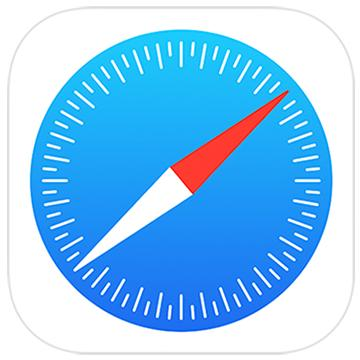
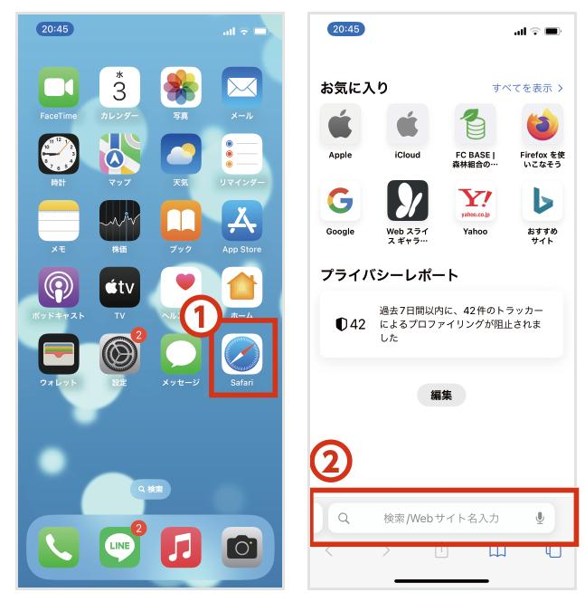
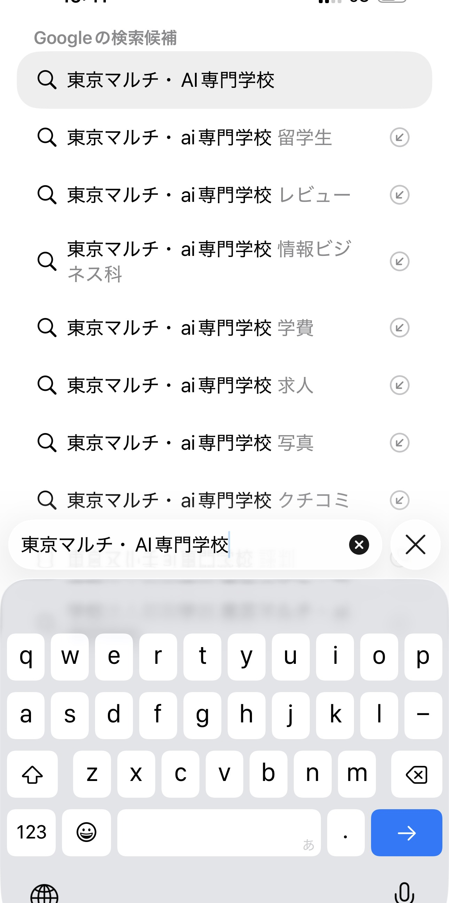
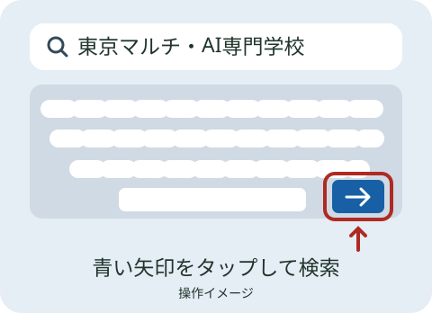
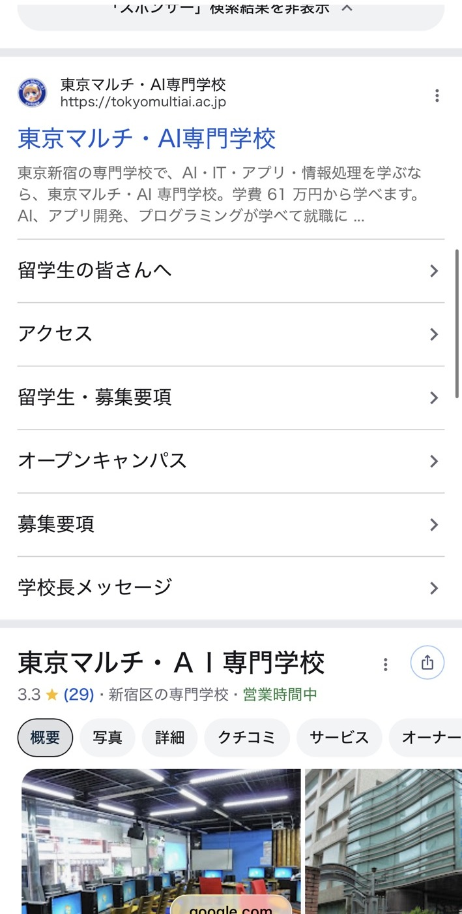
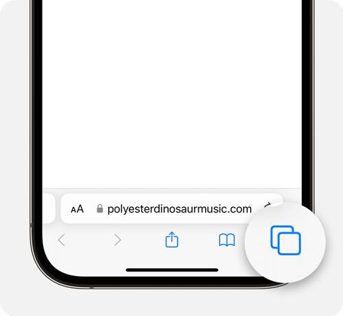
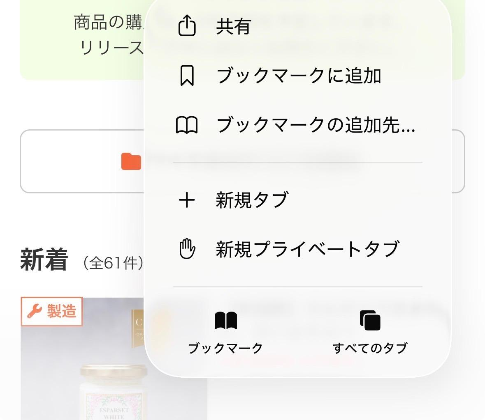
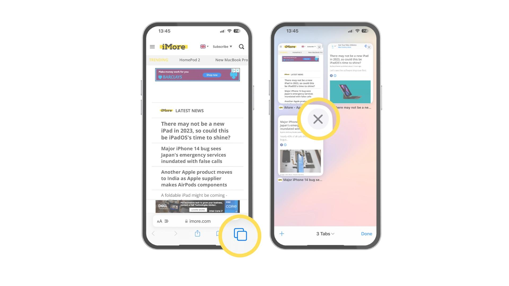

インターネットの使い方
iPhoneでインターネットを使う方法を、わかりやすく紹介します。
学習メニュー
インターネットで検索する
Safariを使って、知りたい情報を検索する方法を紹介します。

手順 1 Safariを開く
ホーム画面にある「Safari」アプリをタップします。

手順 2 検索欄をタップする
Safariを開いたら、画面の下にある 検索欄をタップします。

手順 3 検索する言葉を入力
検索欄に調べたい言葉を入力します。 例えば、「東京マルチ・AI専門学校」と入力してみましょう。

手順 4 検索する
言葉を入力したら、キーボードの右下にある 青い矢印ボタンをタップします。 検索結果が表示されます。
Webサイトを見る
検索結果からWebサイトを開く方法を紹介します。

手順 1 見たいサイトを選ぶ
検索結果の中から、見たいWebサイトを探します。 Webサイトのタイトルをタップします。
手順 2 Webサイトを開く
見たいWebサイトのタイトルをタップすると、 Webサイトが開きます。
タブを閉じる
Safariで開いているタブを閉じる方法を紹介します。

手順 1 タブ一覧を開く
Safariのタブを表示するボタンをタップして、 開いているタブの一覧を表示します。

手順 2 すべてのタブを表示
すでにタブ一覧が表示されていれば、次の手順へ進みます。 メニューが表示された場合は、「すべてのタブ」をタップします。

手順 3 タブを閉じる
閉じたいタブの右上にある 「×」をタップすると、 そのタブを閉じることができます。